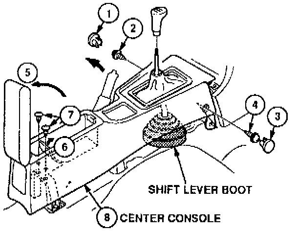
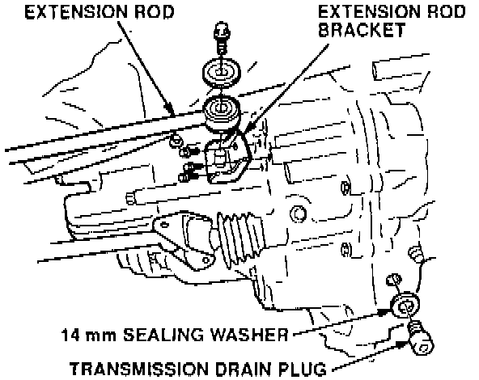
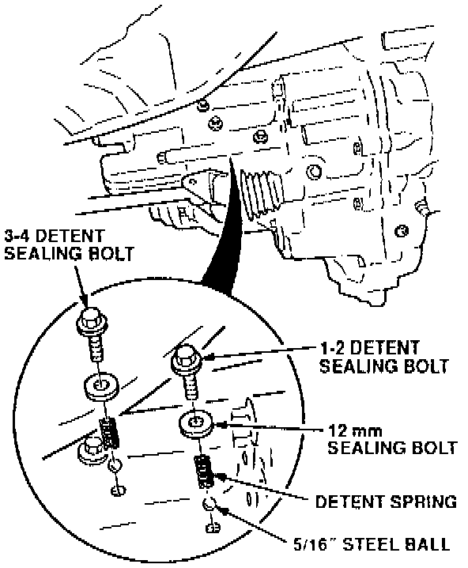

Manual Transmission - Pops Out of Gear
July 27, 1993BULLETIN NO.
93-012
YEAR
1992-93
MODEL
VIGOR
VIN APPLICATION
ALL
Transmission Pops Out of Gear
SYMPTOM
The transmission pops out of 2nd and/or 4th gear while driving.
PROBABLE CAUSE
The rubber shift lever boot overcomes the force of the shift fork detent springs.
CORRECTIVE ACTION
Replace the rubber shift lever boot. the 1-2 detent spring, and the 3-4 detent spring with the parts listed under PARTS INFORMATION.
1. Remove the shift lever knob; then lift up the parking brake lever.

2. Remove the center console by following the numbered sequence, as shown.
NOTE:
Take care not to scratch the center console and dashboard.
3. Remove and replace the rubber shift lever boot.
4. Reinstall the center console in reverse order of removal; then, reinstall the shift lever knob.
5. Raise the car on a hoist, and drain the oil from the transmission.

6. Remove the extension rod; then, remove the extension rod bracket.

7. Remove the 1-2 and 3-4 detent sealing bolts, sealing washers, detent springs, and steel balls from the transmission.
8. Replace the detent springs and sealing washers with the new parts. Reinstall the steel balls, detent springs, sealing washers, and detent sealing bolts in the transmission. Tighten the detent sealing bolts to 22 N.m (2.2 kg-m, 16 lb-ft).
9. Reinstall the extension rod bracket and rod.
10. Reinstall the drain plug with a new sealing washer; then, refill the transmission with oil to the proper level.
PARTS INFORMATION
Shift Lever Boot: P/N 54108-692-000
Detent Spring: P/N 24452-PX5-000
(requires 2)
12 mm Sealing Washer: P/N 94109-12000
(requires 2)
14 mm Drain Plug Washer: P/N 94109-14000
WARRANTY CLAIM INFORMATION
In warranty:
The normal warranty applies.
Out of warranty:
Any repair performed after warranty expiration may be eligible for goodwill consideration by the District Service Manager or your Zone Office. You must request consideration, and get a decision, before starting work.
Operation number: 213125
Flat rate time: 0.4 hour
Failed P/N: 24452-PX5-000
Defect code: 037
Contention code: C99